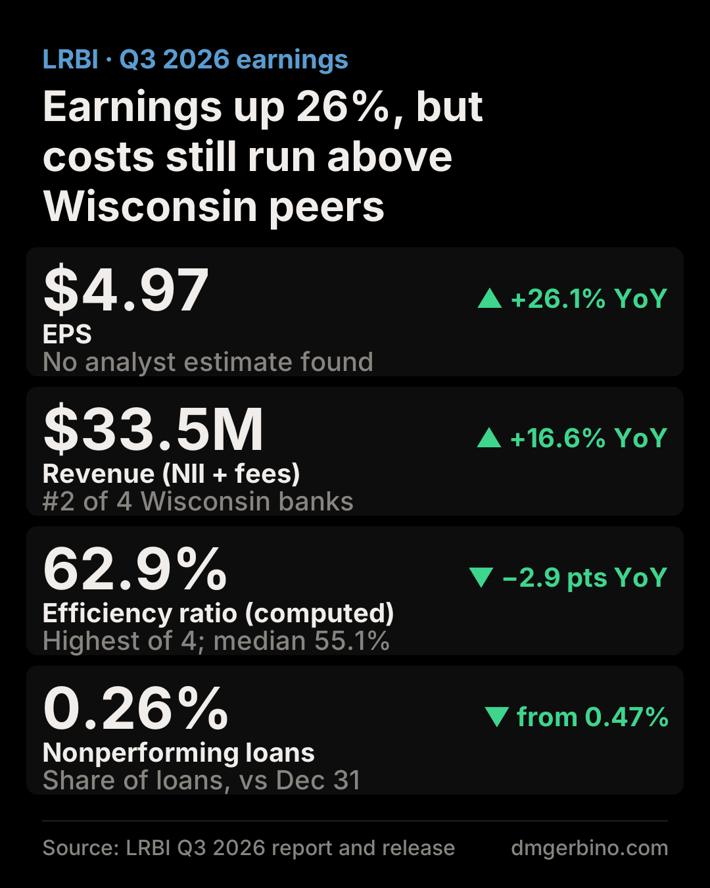

Downloads: Full video, no captions · 60-second cut, no captions · Captions (.srt) · 60-second captions (.srt) · Mobile graphic (PNG) · Mobile graphic (SVG) · Infographic (SVG)
Quarter ended Sep 30, 2026 (calendar Q3). Released Nov 17, 2026, 2:46 p.m. ET via PR Newswire; the full quarterly report was posted on OTC Markets. All figures GAAP; the company reports no adjusted EPS and a single EPS figure. Q2 2026 figures are rounded amounts from the release text.
No consensus estimate was found. Lake Ridge trades on OTCQX and no analyst publishes estimates for it; AlphaSpread and Benzinga show none. The company gives no guidance, so the actual-versus-estimate chart is skipped. Against its own past, EPS of $4.97 is up 26.1% from $3.94 and 8.3% from Q2's $4.59.
Net interest income rose 15.0% from a year ago, as interest income rose $3.05M and interest expense fell $0.58M. Noninterest income rose 25.3%. Noninterest expense rose 11.5%, slower than revenue, so the computed efficiency ratio improved 2.9 points. The report does not give a margin, so the trend lines show dollar amounts. Q4 2025 and Q1 2026 are left out because their quarterly detail was not gathered.
Against three Wisconsin banks that reported the same calendar quarter, Lake Ridge ranks second on revenue and EPS growth and last on efficiency. Bank First's growth includes an acquisition, and Citizens Community's EPS growth starts from a low base.
Revenue is net interest income plus noninterest income. Lake Ridge's efficiency ratio is computed here as noninterest expense over revenue; peers' are their own or computed from their releases. n/d = not disclosed. Peer figures were gathered for this site's Waterstone Financial report on Nov 13-14, 2026.
Lake Ridge gives no numeric guidance and there is no consensus, so the guidance chart is skipped. The release highlights its expansion into Rock County.
Net income rose $2.05M from a year ago. Net interest income added $3.63M and noninterest income $1.15M; higher expenses took $2.18M, a larger provision $0.14M and taxes $0.48M. Amortization of low-income housing tax credit investments, a separate line, was $0.08M lower.
Revenue growth outpaced higher costs
Capital: the report gives no regulatory capital ratios. Equity was 9.0% of assets at Sep 30 (computed), and tangible book value per share was $132.23.
The company reports GAAP only, so there is nothing to reconcile. No one-time items were called out for the quarter.
Figures come from Lake Ridge Bancorp's Q3 2026 earnings release and its quarterly report filed with OTC Markets, read on Nov 18, 2026. Growth rates and ratios were recomputed from the dollar amounts. No analyst covers the stock, so there is no consensus estimate. Peers are three Wisconsin banks that have reported Q3 2026, using GAAP figures from each bank's own release. The share card's price line uses over-the-counter closing prices read point by point from Google Finance's six-month chart, with the last trade carried forward on days without one, because the stock trades thinly and Yahoo Finance could not be read. Data was read on Nov 18, 2026.
Not investment advice.